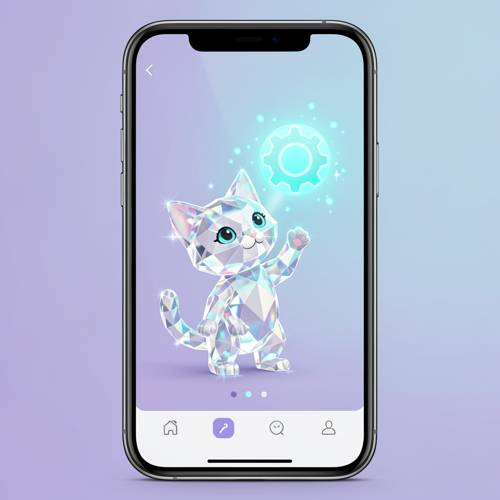

Compound — On an App guide page, a kitten made of crystal had a curious expressio
On an App guide page, a kitten made of crystal had a curious expression and waved its paw to light up a glowing settings button in the air.


Judge — Direct
- PASSCompound - Imagination — The image displays a kitten-like figure composed of transparent, faceted material, consistent with the appearance of crystal. This is a creature that does not exist in reality.
- FAILAction - Non-contact Interaction — The crystal kitten is depicted with one paw raised towards a bright, glowing light. However, there is no visible "settings button" in the air that the kitten is lighting up. The object of the interaction as described in the prompt is missing.
- PASSAttribute - Expression — The kitten has large, wide eyes, a slightly tilted head, and a neutral mouth, which collectively convey an expression of curiosity.
- PASSAttribute - Material — The kitten's body is rendered with numerous flat, geometric facets and is transparent, accurately representing the material properties of crystal or a cut gemstone.
- PASSAction - Hand (Character/Anthropomorphic) — The kitten's left paw is raised in a clear waving gesture. The paw is well-formed with distinct, faceted pads and does not appear distorted or broken.
Judge — Continuum
- PASSCompound - Imagination — The image shows a kitten figure constructed from geometric, faceted shapes, which is consistent with the fantastical concept of a kitten made of crystal.
- PASSAction - Non-contact Interaction — The crystal kitten has its paw raised towards a gear-shaped button, which is glowing brightly with a cyan light and surrounded by sparkles. The composition implies the kitten's action is causing the button to light up without physical contact.
- PASSAttribute - Expression — The kitten has large, wide-open blue eyes, a slightly tilted head, and a small, gentle smile, which together convey a curious and friendly expression.
- PASSAttribute - Material — The body of the kitten is composed of numerous flat, geometric facets that reflect and refract light, giving it a shiny, multi-toned appearance characteristic of crystal or a cut gemstone.
- PASSAction - Hand (Character/Anthropomorphic) — The kitten's left paw is raised in a clear waving gesture. The paw is well-formed with visible pads and a natural-looking structure for a stylized character, showing no distortion or malformation.
What the agent did
Thinking
Generate the image with flux2-klein. Prompt: app guide page, crystal kitten, curious expression, paw waving to light up a glowing settings button floating in air.
Step 1 — `generate_image`
{
"model": "flux2-klein",
"prompt": "A mobile app guide/onboarding page UI on a smartphone screen. In the center of the app screen, a cute kitten made of transparent faceted crystal with a curious tilted-head expression, one paw raised mid-wave, touching a floating glowing gear-shaped settings button that hovers in the air above it. The settings button emits bright cyan light particles that scatter around. Soft gradient app background in lavender and light blue, minimal UI hints like dots indicator at the bottom. Sparkling refractions through the crystal kitten, clean modern illustration style."
}Result img_0
Thinking
The image looks quite good: app guide page with phone UI, crystal faceted kitten with curious expression, paw raised waving toward a glowing cyan gear/settings button floating in the air. Dots indicator, bottom nav bar. The expression is curious (tilted head, big eyes). This matches well. Mark best and stop.
Step 2 — `mark_best`
{
"image": "img_0",
"reason": "All requested elements present: app guide page UI (dots indicator, nav bar), faceted crystal kitten with curious tilted-head expression, raised paw waving toward a floating glowing gear-shaped settings button with light particles."
}Thinking
Good enough is a stop condition. Done.
Model
The image is complete and matches the prompt well: - **App guide page**: shown as a smartphone screen with a back arrow, page dots indicator at the bottom, and a nav bar with home/settings/profile icons - **Crystal kitten**: faceted transparent crystal body with sparkling refractions - **Curious expression**: tilted head and big wide eyes - **Waving paw**: one paw raised mid-wave toward the button - **Glowing settings button**: a bright cyan gear icon floating in the air, radiating light particles around the kitten's paw I've marked this as the best result since every element the prompt asks for is present and correctly rendered.